Contents
- 1 How to make the section numbers appear as characters
- 2 Numbering system and conversion
- 3 Macro divisions influence the numbering
- 4 Complete section numbering
- 5 Section headline without chapter number
- 6 Independent section numbering
- 7 Specific numbering of specialised sections
- 8 Dotted number and stopper
- 9 Page numbering in words
How to make the section numbers appear as characters
with \setupsection and option bodypartconversion=Character
-
\setuppapersize[A8,landscape] \setupsection [section-3] [conversion=Character] \starttext \startsection [title={\ConTeXt\ is fun}] \stopsection \stoptext
- 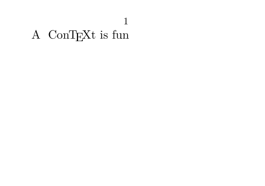
The section-3 corresponds to section. Similarly
-
section-1corresponds topart, -
section-2corresponds tochapter - and so on.
-
\setuppapersize[A8,landscape] \setupsection [section-3] [conversion=Romannumerals] \starttext \startsection [title={\ConTeXt\ is fun}] \stopsection \stoptext
- 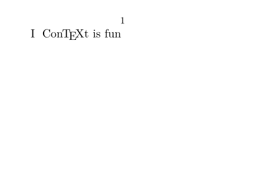
Numbering system and conversion
You can also choose the numbering system (done by conversion) with \definestructureconversionset and \setuphead and its option sectionconversionset
You can find the conversions codes at \convertnumber.
-
\setuppapersize[A8,landscape] \definestructureconversionset [mySet] [A,R,n,n,a,r] [n] \setuphead [part,chapter,section,subsection, subsubsection,subsubsubsection] [sectionconversionset=mySet] \starttext \completecontent[criterium=all] \startpart[title={Part 1}] \startchapter[title={Chapter "1.1"}] \startsection[title={Section "1.1.1"}] \startsubsection[title={Subsection "1.1.1.1"}] \startsubsubsection[title={Subsubsection "1.1.1.1.1"}] \stopsubsubsection \stopsubsection \stopsection \stopchapter \stoppart \stoptext
- 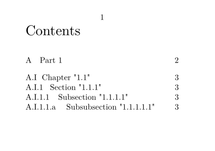
Macro divisions influence the numbering
Sometimes one wants an unnumbered chapter, say introduction. Usually this concern the first or last chapter, this is where you will want to use the available macro divisions like \startfrontmatter.
-
\setuppapersize[A8] \setupcombinedlist [content] [list={chapter,section}] \starttext \completecontent[criterium=all] \startchapter[title={With number}] \startsection[title={Section one}] \stopsection \stopchapter \startchapter[title={With number}] \startsection[title={Section two}] \stopsection \stopchapter \stoptext
- 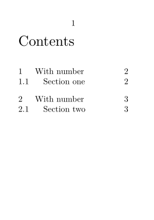
-
\setuppapersize[A8] \setupcombinedlist [content] [list={chapter,section}] \starttext \startfrontmatter \completecontent[criterium=all] \startchapter[title={Without number}] \startsection[title={section}] \stopsection \stopchapter \stopfrontmatter \startbodymatter \startchapter[title={With number}] \startsection[title={section}] \stopsection \stopchapter \stopbodymatter \stoptext
- 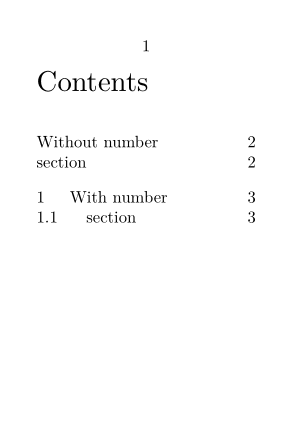
Note that just putting the introduction in the frontmatter already is enough, since frontmatter switches off chapter numbering.
An alternative approach:
\setuphead[title][ incrementnumber=yes, % keep an internal title counter+list number=no] % don't display the counter % Manually specify the composition of the section and subsection % numbers, so subsection 1.1 in the second title won't appear as % Subsection 2.1.1 \setuphead[section][sectionsegments=section] \setuphead[subsection][sectionsegments=section:subsection] % Redefine the toc list to include titles \definecombinedlist[content][list={title,section}]
Usually you don’t want this. It also includes implicit titles (from ToC or Index) in the ToC.
Complete section numbering
You might have documents in which your sections don’t follow the structure, such as in:
-
\setuppapersize[A8] \starttext \startchapter[title={Chapter}] \startsection[title={Section}] %\startsubsection[title={SubSection}] \startsubsubsection[title={SubSubSection}] \stopsubsubsection %\stopsubsection \stopsection \stopchapter \stoptext
-

In that case, you would get 1.1 Section 1 SubSubSection.
To enable complete section numbering, you would need in this case:
\setuphead[subsection][criterium=all]
-
\setuppapersize[A8] \setuphead[subsection][criterium=all] \starttext \startchapter[title={Chapter}] \startsection[title={Section}] %\startsubsection[title={SubSection}] \startsubsubsection[title={SubSubSection}] \stopsubsubsection %\stopsubsection \stopsection \stopchapter \stoptext
- 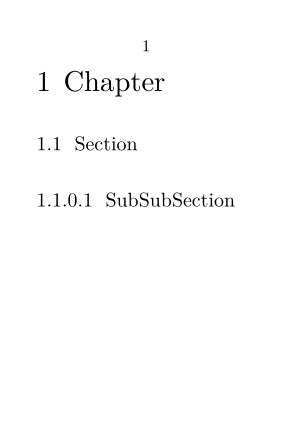
Section headline without chapter number
See default behavior
-
\setuppapersize[A8,landscape] \starttext \startchapter[title={Eric}] \startsection[title={Foo 1}] \startsubsection[title={Bar one}] \stopsubsection \stopsection \startsection[title={Foo 2}] \stopsection \stopchapter \stoptext
- 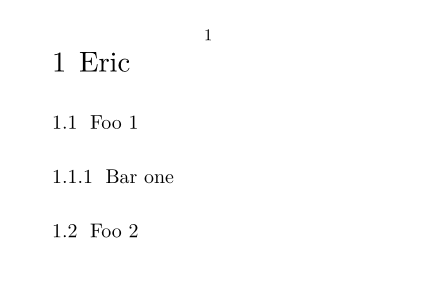
If you only want the section number in the section title you use \setuphead with option sectionsegments=.
-
\setuppapersize[A8,landscape] \setuphead[section][sectionsegments=section] \starttext \startchapter[title={Eric}] \startsection[title={Foo 1}] \startsubsection[title={Bar one}] \stopsubsection \stopsection \startsection[title={Foo 2}] \stopsection \stopchapter \stoptext
- 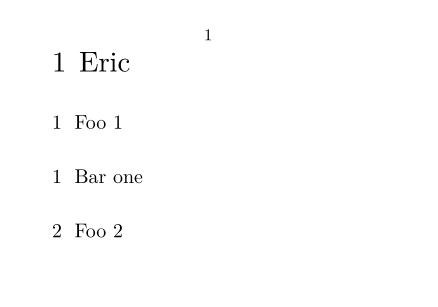
But as once you changed one you have to change the lower ones. So you have to add the definition of sectionsegments in subsection, subsubsection, ...
-
\definepapersize[sheet][width=104mm,height=74mm] \setuppapersize[A8][sheet] \setuppaper[nx=2,ny=1] \setuparranging[XY] \showframe[edge] \setuphead [section] [sectionsegments=section] \setuphead [subsection] [sectionsegments=section:subsection] \setuphead [subsubsection] [sectionsegments=section:subsubsection] \starttext \startchapter[title={Eric}] \startsection[title={Foo 1}] \startsubsection[title={Bar one}] \startsubsubsection[title={Barbar one}] \stopsubsubsection \startsubsubsection[title={Barbar two}] \stopsubsubsection \stopsubsection \startsubsection[title={Bar two}] \startsubsubsection[title={Barbar one}] \stopsubsubsection \startsubsubsection[title={Barbar two}] \stopsubsubsection \stopsubsection \stopsection \startsection[title={Foo 2}] \startsubsection[title={Bar one}] \startsubsubsection[title={Barbar one}] \stopsubsubsection \startsubsubsection[title={Barbar two}] \stopsubsubsection \stopsubsection \stopsection \stopchapter \stoptext
- 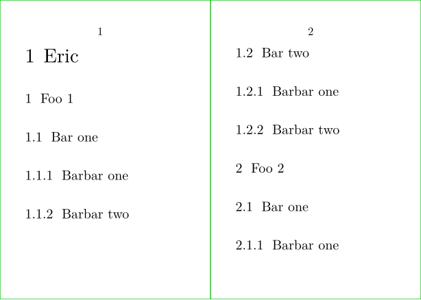
\starttext \chapter{Eric} \section{Foo 1} \subsection{Bar one} \subsubsection{Barbar one } \subsubsection{Barbar two} \subsection{Bar two} \subsubsection{Barbar one} \subsubsection{Barbar two} \section{Foo 2} \subsection{Bar one} \subsubsection{Barbar one} \subsubsection{Barbar two} \stoptext
Independent section numbering
If you want section numbering to be independent of chapter numbering, use \defineresetset and \setuphead with the option sectionresetset= in order to define which level has the effect to reset or not, the numbering scheme.
-
\setuppapersize[A7] \setuphead[sectionresetset=default] \setuphead[part][number=yes,placehead=yes] \setuphead[chapter][sectionsegments=chapter] \setuphead[section][sectionsegments=chapter:section] \setupcombinedlist [content] [list={part,chapter,section}] \starttext \completecontent[criterium=all] \startpart[title={Part 1}] \startchapter[title={Chapter "1.1"}] \startsection[title={Section "1.1.1"}] \stopsection \stopchapter \stoppart \startpart[title={Part 2}] \startchapter[title={Chapter "2.1"}] \startsection[title={Section "2.1.1"}] \stopsection \startsection[title={Section "2.1.2"}] \stopsection \stopchapter \startchapter[title={Chapter "2.2"}] \startsection[title={Section "2.2.1"}] \stopsection \startsection[title={Section "2.2.2"}] \stopsection \stopchapter \stoppart \stoptext
- 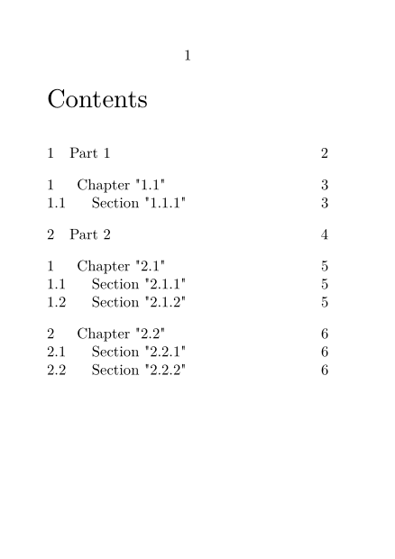
-
\setuppapersize[A7] % Do not reset at part and chapter levels \defineresetset [default] [0,0,1] [1] \setuphead[sectionresetset=default] \setuphead[part][number=yes,placehead=yes] \setuphead[chapter][sectionsegments=chapter] \setuphead[section][sectionsegments=chapter:section] \setupcombinedlist [content] [list={part,chapter,section}] \starttext \completecontent[criterium=all] \startpart[title={Part 1}] \startchapter[title={Chapter "1.1"}] \startsection[title={Section "1.1.1"}] \stopsection \stopchapter \stoppart \startpart[title={Part 2}] \startchapter[title={Chapter "2.1"}] \startsection[title={Section "2.1.1"}] \stopsection \startsection[title={Section "2.1.2"}] \stopsection \stopchapter \startchapter[title={Chapter "2.2"}] \startsection[title={Section "2.2.1"}] \stopsection \startsection[title={Section "2.2.2"}] \stopsection \stopchapter \stoppart \stoptext
- 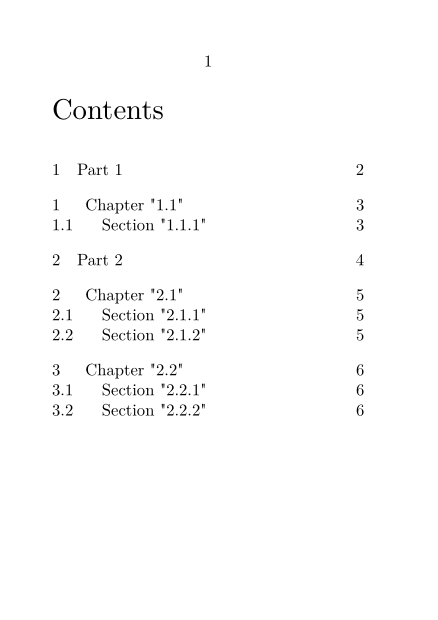
Specific numbering of specialised sections
Answer 1 - Headings numbered independent of chapters or other headings
If you want a heading that gets numbered without resetting at new sections or chapters (for example, for problems whose numbers increment throughout a book), here is a solution due to Hans on the mailing list (2003):
-
\setuppapersize[A7] \setupinteraction[state=start] \definehead [Problem] [subsubsubsection] % use a lower level head \setuphead [Problem] % cleaned up [style=\ss\bf, color=red, before=\blank, ownnumber=yes] % use your own numbers \setuplabeltext[Problem={Problem }] % use a label text \newcounter\ProblemNumber % increment and feed \def\problem#1% {\doglobal\increment\ProblemNumber \Problem{\ProblemNumber}{#1}} \setuplist[Problem] % nicer here [alternative=c, criterium=all, width=2em, interaction=all] \starttext List of Problems \blank[big] \placelist[Problem] \blank[big] \startsection[title={tufte}] Text. \problem{First problem} The first problem description. \stopsection \startsection[title={tufte}] Text. \problem{Second problem} Second problem description. \stopsection \stoptext
- 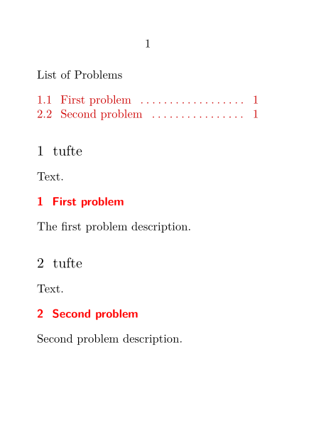
Answer 2
For a textbook, suppose that you collect the exercises in a section at the end of each chapter, with each exercise a subsection having a short title, and the exercises should be numbered only by the subsection (not 1.6.7 for example, just 7). The usage:
-
\setuppapersize[A8,landscape] \definehead [exercise] [subsection] \setuphead [exercise] [style=italic, numbercommand={% \determineheadnumber[subsection]% \currentheadnumber% \gobbleoneargument}] \starttext \startsection[title={Exercises}] \startexercise[title={Batteries}] What is the cost of energy from a 9V battery? From a wall socket (the mains)? \stopexercise \stopsection \stoptext
- 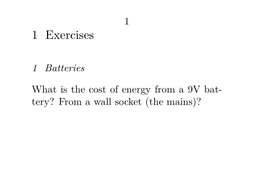
Dotted number and stopper
for caption
How to put something (a colon or dot for example) after the float number in a caption?
-
\placefigure [fig:cow] {cow} {\externalfigure[cow][width=3cm]} \let\floatcaptionsuffix=: \placefigure [fig:cow] {cow} {\externalfigure[cow][width=3cm]}
- 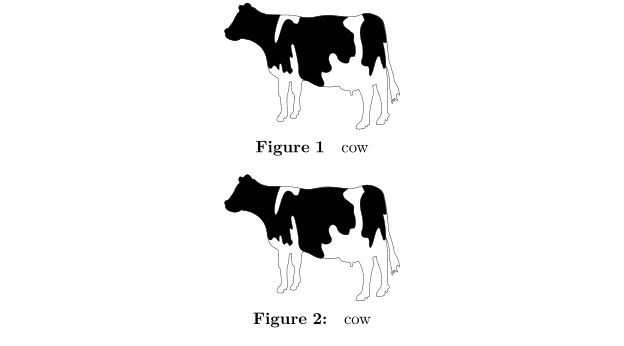
| TODO: This page could use some more description, and maybe elaboration with other float caption options. (See: To-Do List) |
for section
See default:
-
\setuppapersize[A8,landscape] \starttext \completecontent \startsection[title=abc] \startsubsection[title=def] \stopsubsection \stopsection \stoptext
- 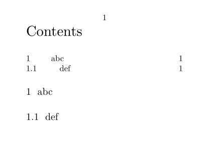
Example of cutomization
-
\setuppapersize[A8,landscape] \def\Dot#1{#1.} \setuphead[section][sectionstopper={.}] \setuplist[section][stopper={}] \starttext \completecontent \startsection[title=abc] \startsubsection[title=def] \stopsubsection \stopsection \stoptext
-

Can also be done with
-
\setuppapersize[A8,landscape] \def\Dot#1{#1.} \setuphead[section][numbercommand=\Dot] \setuplist[section][numbercommand=\Dot] \setuplist[subsection][numbercommand=\Dot] \setuplist[subsubsection][numbercommand=\Dot] \starttext \completecontent \startsection[title=abc] \startsubsection[title=def] \stopsubsection \stopsection \stoptext
- 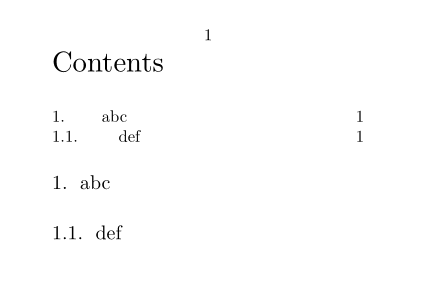
Another trick to achieve the same:
-
\setuppapersize[A8,landscape] \setuplabeltext [sl] [chapter={{},{.}}] \setuphead [chapter] [style=bold, before=\smallskip, after=,page=no] \starttext \startchapter[title=English] without a dot \stopchapter \mainlanguage[sl] \startchapter[title=Slovenian] having one \stopchapter \stoptext
- 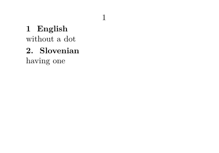
Page numbering in words
To number pages using words rather than numbers (eg 'three' or 'twentyfive' rather than 3 or 25), put the following code in your document:
\input numstr \defineconversion [numstring][\numstr] \setuppagenumbering[conversion=numstring]
and make the following macro file (numstr.tex) available:
\unprotect \def\numstring#1{\expandafter\@numstring\csname c@#1\endcsname} \def\@numstring#1{\ns@numstr{#1}\ns@nineteens{null}{}} \let\numstr\@numstring% \def\ns@numoutofrange#1#2{\number#1#2} \def\ns@numstr#1#2#3#4% {\ifnum\number#1<\plusone% #3% \else\ifnum\number#1<1000000000 % \expandafter\ns@numstring\expandafter{\number#1}#2% \else% \ns@numoutofrange{#1}{#4}% \fi\fi} \def\ns@numstring#1#2{% \expandafter\ns@@numstring% \ifcase% \ifnum#1<10 1% \else\ifnum#1<100 2% \else\ifnum#1<\@m 3% \else\ifnum#1<\@M 4% \else\ifnum#1<100000 5% \else\ifnum#1<1000000 6% \else\ifnum#1<10000000 7% \else\ifnum#1<100000000 8% \else9% \fi\fi\fi\fi\fi\fi\fi\fi % \or00000000#1% case 1: Add 8 leading zeros \or0000000#1% case 2: Add 7 leading zeros \or000000#1% case 3: Add 6 leading zeros \or00000#1% case 4: Add 5 leading zeros \or0000#1% case 5: Add 4 leading zeros \or000#1% case 6: Add 3 leading zeros \or00#1% case 7: Add 2 leading zeros \or0#1% case 8: Add 1 leading zero \or#1% case 9: Add no leading zeros \or% \@nil#2% \fi} \def\ns@@numstring#1#2#3#4#5#6#7\or#8\@nil#9% {\ifnum#1#2#3>\z@ \ns@million#1#2#3% \ifnum#4#5#6>\z@\space\fi% \fi% \ifnum#4#5#6>\z@% \ns@hundred#4#5#6{#1#2#3}{#4#5}\ns@nineteen% \ifnum#4#5#6>\z@\space\fi% thousand% \ifnum#7>\z@\space\fi% \fi% \ns@hundred#7{#4#5#6}1#9} \def\ns@million#1#2#3% {\ifnum#1#2#3=\plusone% \ns@hundred#1#2#301\ns@nineteene% \space% million% \else% \ns@hundred#1#2#301\ns@nineteens% \space% millions% \fi} \def\ns@hundred#1#2#3#4#5#6% {\ifnum#1>\z@% \ifnum#4#1>\z@\ns@nineteen#1\space\fi% hundred% \ifnum#2#3>\z@\space and\space\fi% \fi% \ifnum#2#3<20 % \ifnum#5#2#3>\z@#6{#2#3}\fi% \else% \ns@ninety#2\ifnum#3>\z@-\ns@nineteen#3\fi% #60% \fi} \def\ns@nineteen#1% {\ifcase#1\empty\or one\or two\or three\or four\or five\or six\or% seven\or eight\or nine\or ten\or eleven\or twelve\or thirteen\or% fourteen\or fifteen\or sixteen\or seventeen\or% eighteen\or nineteen\fi} \def\ns@nineteens#1{\ns@nineteen{#1}} \def\ns@nineteene#1{\ns@nineteen{#1}} \def\ns@ninety#1% {\ifcase#1 \or \or twenty% \or thirty% \or forty% \or fifty% \or sixty% \or seventy% \or eighty% \or ninety% \fi} \protect
This code originated with Jonathan Sauerand (in German), and was modified and explained by Wolfgang Schuster and Zhichu Chen.